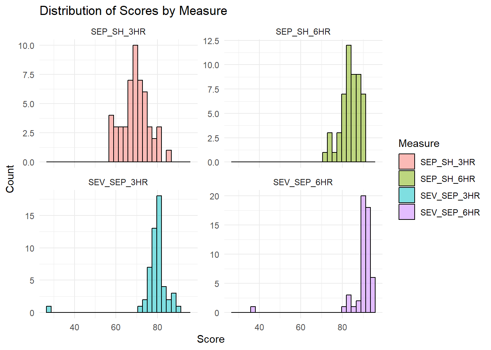
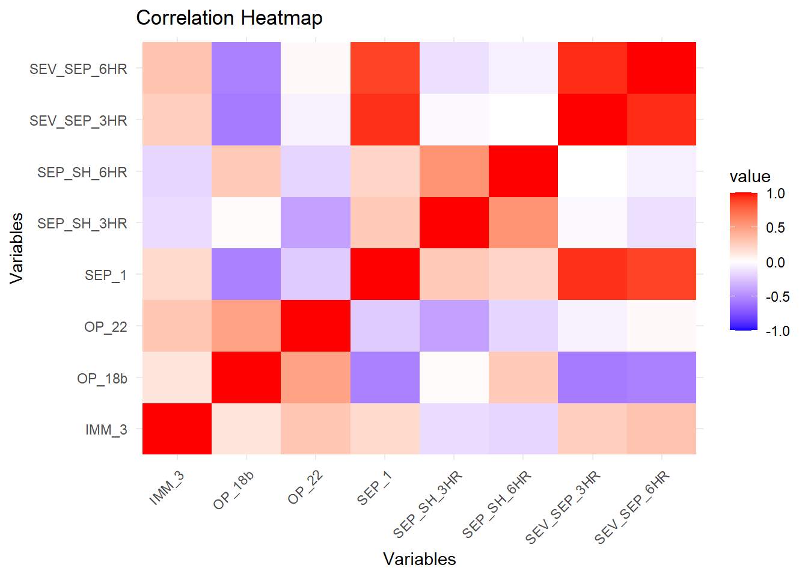
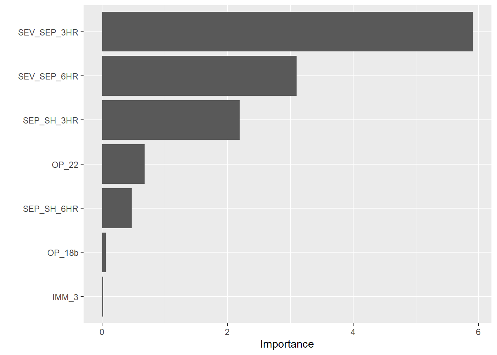
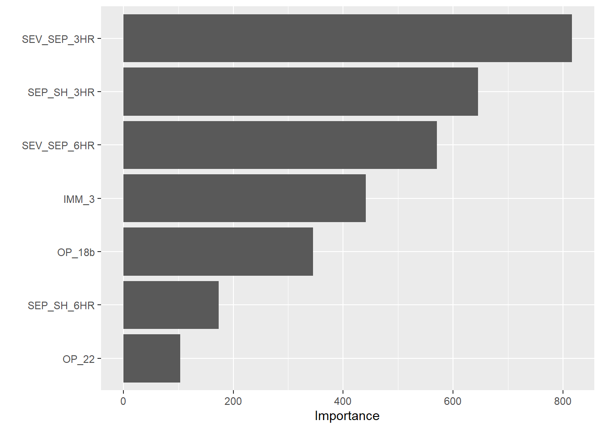

I begin with skimming through the data and assess any potential hypotheses based on the measure names.
# Use skim to look at data but also if there is anything missingskim(data)
Data summary
Name
data
Number of rows
1232
Number of columns
8
_______________________
Column type frequency:
character
7
numeric
1
________________________
Group variables
None
Variable type: character
skim_variable
n_missing
complete_rate
min
max
empty
n_unique
whitespace
state
0
1.00
2
2
0
56
0
condition
0
1.00
11
35
0
6
0
measure_id
0
1.00
5
20
0
22
0
measure_name
0
1.00
26
172
0
21
0
footnote
168
0.86
1
6
0
3
0
start_date
0
1.00
10
10
0
4
0
end_date
0
1.00
10
10
0
2
0
Variable type: numeric
skim_variable
n_missing
complete_rate
mean
sd
p0
p25
p50
p75
p100
hist
score
155
0.87
134.04
102.02
1
70
93
193
730
▇▃▁▁▁
# Look at unique measure names for further explorationunique(data$measure_name)
[1] "Percentage of healthcare personnel who are up to date with COVID-19 vaccinations"
[2] "Healthcare workers given influenza vaccination Higher percentages are better"
[3] "Average (median) time patients spent in the emergency department before leaving from the visit A lower number of minutes is better"
[4] "Average time patients spent in the emergency department before being sent home A lower number of minutes is better (high)"
[5] "Average time patients spent in the emergency department before being sent home A lower number of minutes is better (low)"
[6] "Average time patients spent in the emergency department before being sent home A lower number of minutes is better (moderate)"
[7] "Average (median) time patients spent in the emergency department before leaving from the visit- Psychiatric/Mental Health Patients. A lower number of minutes is better"
[8] "Average time patients spent in the emergency department before leaving from the visit - Psychiatric/Mental Health Patients. A lower number of minutes is better (high)"
[9] "Average time patients spent in the emergency department before leaving from the visit - Psychiatric/Mental Health Patients. A lower number of minutes is better (low)"
[10] "Average time patients spent in the emergency department before leaving from the visit - Psychiatric/Mental Health Patients. A lower number of minutes is better (moderate)"
[11] "Average time patients spent in the emergency department before leaving from the visit - Psychiatric/Mental Health Patients. A lower number of minutes is better (very high)"
[12] "Percentage of patients who left the emergency department before being seen Lower percentages are better"
[13] "Percentage of patients who came to the emergency department with stroke symptoms who received brain scan results within 45 minutes of arrival Higher percentages are better"
[14] "Percentage of patients receiving appropriate recommendation for follow-up screening colonoscopy Higher percentages are better"
[15] "Percentage of patients who had cataract surgery and had improvement in visual function within 90 days following the surgery Higher percentages are better"
[16] "Safe Use of Opioids - Concurrent Prescribing"
[17] "Percentage of patients who received appropriate care for severe sepsis and septic shock. Higher percentages are better"
[18] "Septic Shock 3-Hour Bundle"
[19] "Septic Shock 6-Hour Bundle"
[20] "Severe Sepsis 3-Hour Bundle"
[21] "Severe Sepsis 6-Hour Bundle"
# Inspecthead(data)
state condition measure_id
1 AK Healthcare Personnel Vaccination HCP_COVID_19
2 AK Healthcare Personnel Vaccination IMM_3
3 AK Emergency Department OP_18b
4 AK Emergency Department OP_18b_HIGH_MIN
5 AK Emergency Department OP_18b_LOW_MIN
6 AK Emergency Department OP_18b_MEDIUM_MIN
measure_name
1 Percentage of healthcare personnel who are up to date with COVID-19 vaccinations
2 Healthcare workers given influenza vaccination Higher percentages are better
3 Average (median) time patients spent in the emergency department before leaving from the visit A lower number of minutes is better
4 Average time patients spent in the emergency department before being sent home A lower number of minutes is better (high)
5 Average time patients spent in the emergency department before being sent home A lower number of minutes is better (low)
6 Average time patients spent in the emergency department before being sent home A lower number of minutes is better (moderate)
score footnote start_date end_date
1 7.3 <NA> 2024-01-01 2024-03-31
2 80.0 <NA> 2023-10-01 2024-03-31
3 140.0 25, 26 2023-04-01 2024-03-31
4 157.0 25, 26 2023-04-01 2024-03-31
5 136.0 25, 26 2023-04-01 2024-03-31
6 136.0 25, 26 2023-04-01 2024-03-31
Based on these measures, I am interested in predicting measure[17], “Percentage of patients who received appropriate care for severe sepsis and septic shock. Higher percentages are better”. With this in mind, I will remove some measures I am not interested in.
I included seemingly irrelevant measures, like staff immunization, to assess its affect on the care of severe sepsis and septic shock. I also wanted to see how this predictor acts in modeling.
# Filter out datadata <- data %>%filter(measure_id %in%c("OP_18b", "IMM_3", "SEP_1", "SEP_SH_3HR", "SEP_SH_6HR", "SEV_SEP_3HR", "SEV_SEP_6HR", "OP_22"))
Creation of a wide format and aggregate version of the data. To explain further, I had originally converted data into a wide format to find out lots of values were missing. To combat this, I figured it would be ok to average values from different time periods (considering they are within a year of each other) to have a more complete data set.
# Convert into wide formatdata_wide <- data %>%group_by(measure_id, state) %>%summarise(score =mean(score))
`summarise()` has grouped output by 'measure_id'. You can override using the
`.groups` argument.
data_bundle <- data %>%filter(measure_id %in%c("SEP_SH_3HR", "SEP_SH_6HR", "SEV_SEP_3HR", "SEV_SEP_6HR"))histo <-ggplot(data_bundle, aes(x = score, fill = measure_id)) +geom_histogram(color ="black", alpha =0.5) +facet_wrap(~ measure_id, scales ="free_y") +labs(title ="Distribution of Scores by Measure",x ="Score",y ="Count",fill ="Measure") +theme_minimal()print(histo)
`stat_bin()` using `bins = 30`. Pick better value with `binwidth`.
Warning: Removed 16 rows containing non-finite outside the scale range
(`stat_bin()`).

Based on this histogram, we can see that most places are scoring above a 70 in these measures. I am unsure what the scoring scale is but we can see that most states tend to perform very similarly and see little variability in scores.
Before building a model, correlation analysis is done.
library(corrplot)
Warning: package 'corrplot' was built under R version 4.3.3
corrplot 0.95 loaded
library(knitr)
Warning: package 'knitr' was built under R version 4.3.3
library(reshape2)
Attaching package: 'reshape2'
The following object is masked from 'package:tidyr':
smiths
library(RColorBrewer)cor_df <- data_wide %>%select(-1)cor_matrix <-cor(cor_df, method ="pearson", use ="complete.obs")print(cor_matrix)
# Melt the correlation matrix for ggplotcor_matrix_melted <-melt(cor_matrix)# Plot the heatmapmatrix <-ggplot(cor_matrix_melted, aes(Var1, Var2, fill = value)) +geom_tile() +scale_fill_gradient2(low ="blue", high ="red", mid ="white", midpoint =0, limit =c(-1, 1)) +theme_minimal() +theme(axis.text.x =element_text(angle =45, hjust =1)) +labs(title ="Correlation Heatmap", x ="Variables", y ="Variables")print(matrix)

After inspection, it seems things do have some high correlation values. This will be important to note when creating models. I intend on calculating VIF to assess its effect.
Model Fitting
First, I begin by splitting the data into 5 folds.
# Set seedseed <-123set.seed(seed)# Cross validationdata_split <-initial_split(data_wide, prop =0.8)train_data <-training(data_split)test_data <-testing(data_split)folds <-vfold_cv(train_data, v =5)
I start with a regular linear regression model. I also set the recipe. In this code chunk, I also calculate some metrics and chart out variable importance. This model has a strong r-squared value and reasonable rmse. However, multicolinearity is still a concern.
# Set recipe (also omit na rows and normalize the numeric predictors)recipe <-recipe(SEP_1 ~ OP_18b + IMM_3 + SEP_SH_3HR + SEP_SH_6HR + SEV_SEP_3HR + SEV_SEP_6HR + OP_22, data = train_data) %>%step_naomit(all_predictors()) %>%step_normalize(all_numeric_predictors())lm_spec <-linear_reg() %>%set_engine("lm")# Insert recipelm_wf <-workflow() %>%add_recipe(recipe)lm_fit <- lm_wf %>%add_model(lm_spec) %>%fit(data = train_data)lm_fit %>%extract_fit_parsnip() %>%tidy()
As I noted earlier, the high values found in the correlation matrix are concerning. To check, I calculated VIF to really see which predictors are a problem.
Based on the code chunk above, we do have some multiconlinearity, specifically in both 6 hour bundles. To tackle this, I chose to implement LASSO regression. According to what I have read online, LASSO can handle multicollinearity by shrinking correlated predictors toward zero. LASSO has seemingly shrunk influenza vaccination figures and average median time in emergency departments. Both of these variables were the lowest in the linear regression model’s VIP. Interestingly, septic shock 3 hour bundles have lower importance in this model. Severe sepsis 3 hour bundles are far and away the most importance variable in this model.
Also, rmse and r-squared values are very similar to the regular linear regression model.
# Make predictions on test data and calculate RMSElasso_preds <-predict(lasso_fit, new_data = train_data)lasso_preds <-tibble(truth = train_data$SEP_1, predicted = lasso_preds$.pred)lasso_rmse <- lasso_preds %>%metrics(truth = truth, estimate = predicted)print(lasso_rmse)
# A tibble: 3 × 3
.metric .estimator .estimate
<chr> <chr> <dbl>
1 rmse standard 1.06
2 rsq standard 0.987
3 mae standard 0.839
# Chart variable importancevip(lasso_fit)

The forest model has the greatest rmse and loses a bit of interpret-ability as it is a black box. Interestingly, the VIP has shifted some rankings around, making immunization and average median time more important.
# Set method for random forestforest_spec <-rand_forest(mode ="regression") %>%set_engine("ranger", importance ="impurity", seed = seed)# Insert recipeforest_wf <-workflow() %>%add_recipe(recipe)# Create model with all predictors and random forestforest_fit <- forest_wf %>%add_model(forest_spec) %>%fit(data = train_data)# Make predictions on test data and calculate RMSEforest_preds <-predict(forest_fit, new_data = train_data)forest_preds <-tibble(truth = train_data$SEP_1, predicted = forest_preds$.pred)forest_rmse <- forest_preds %>%metrics(truth = truth, estimate = predicted)print(forest_rmse)
# A tibble: 3 × 3
.metric .estimator .estimate
<chr> <chr> <dbl>
1 rmse standard 2.92
2 rsq standard 0.971
3 mae standard 1.35
# Chart varaible importancevip(forest_fit)

Before I evaluate the models with the testing data, I believe the Lasso is the best model because of its robustness and its performance metrics. It performs similarly enough to the linear regression model while still addressing multicolinearity. Lasso can also help prevent overfitting which is a great concern considering we have not used the test data yet. It also still has enough interpret-abiltiy to make it understandable.
This part entails the evaluation of the models using the testing data instead. Realistically, the testing data size is too small to be conclusive.
In this, we see that the initial model performs the best, with the LASSO model trailing really closely behind. This testing split has lead the random forest to perform much worse. This could be because of its tendency to over fit or the fact that the testing split is small.
# A tibble: 3 × 3
.metric .estimator .estimate
<chr> <chr> <dbl>
1 rmse standard 3.49
2 rsq standard 0.744
3 mae standard 2.24
Regarding the final LASSO model, it seems that score for severe sepsis 3 hour bundles and septic shock 3 hour bundles has the greatest effects on percentage of patients receiving appropriate care for severe sepsis and septic shock. This makes complete sense considering the bundles are the standard protocol for patients with sepsis or septic shock.This finding just provides more evidence for its utility in providing appropriate care.
Percentage of healthcare workers immunized against influenza and average median time spend in an emergency department have little effect on appropriate care. This is a bit shocking to me as I imagined these variables would be an indication of healthcare quality. However, it seems that in the context of sepsis, these variables do not matter.